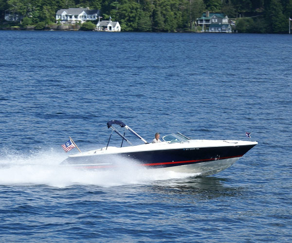

My Interests

I am a huge Carolina Basketball fan. I will never forget rushing Franklin Street after UNC won the national championship my freshman year. I used to go every year to Roy Williams Basketball Camp when I was younger.

One of my greatest achievements was earning the rank of Eagle Scout in my Boy Scout troop. It was a seven year commitment and it required a lot of hard work and dedication.

I live on Lake Norman and when the weather is nice you can usually find me on the lake. I love to ski, wake board, and tube and I was actually a counselor for a lake camp for a few years.